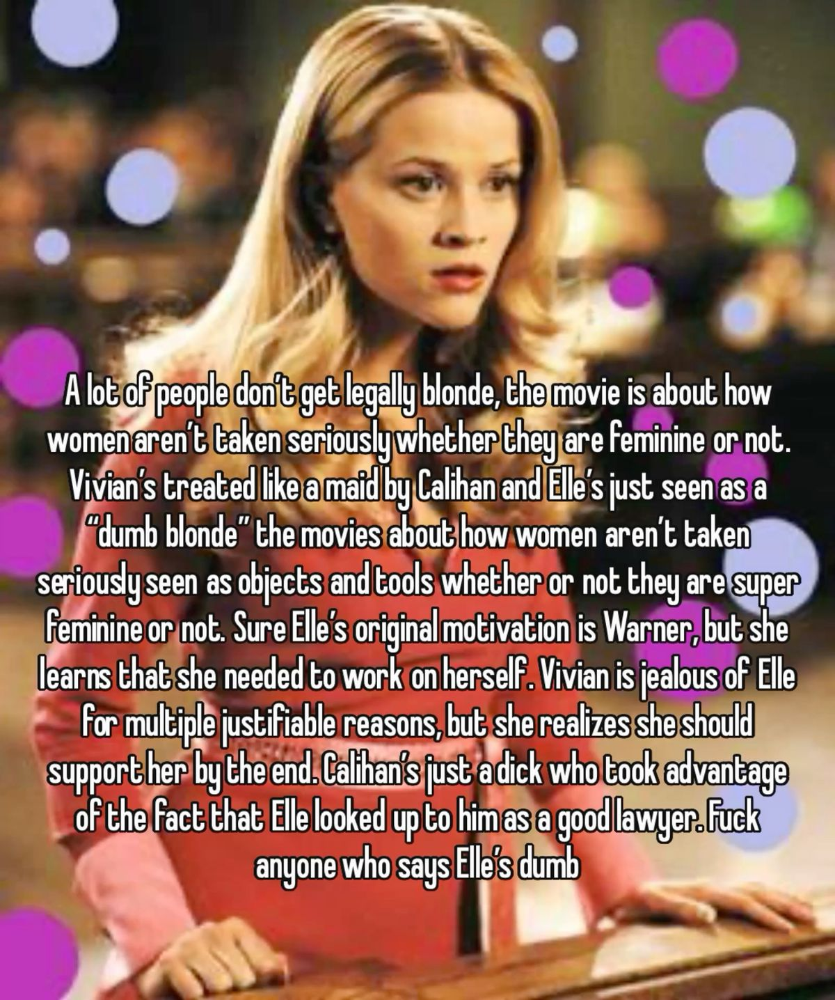
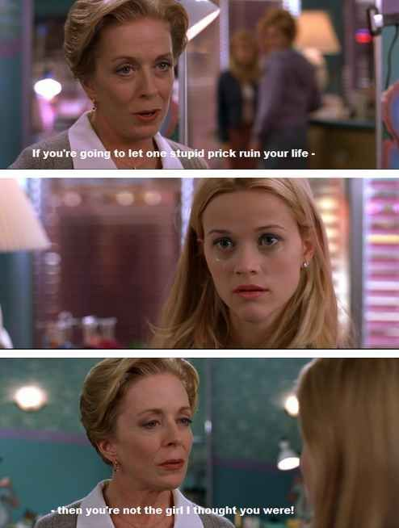

Legally Blonde ♫

This is just real by the way and reciting this again
I love the dynamic of Elle with other characters, especially with Paulette and Emmet, a bit of Vivian too if you consider that. I am most concerned about Warner, I don’t like him because he is indecisive and he might even have family pressure to marry Vivian or any other girl that is not like Elle. As for professor Callahan, he might be even worse than Warner. A wolf in sheep clothing if you asked, he has the deception that Vivian is the housewife and Elle is just a dumb blonde. Gladly at the end of the movie Vivian and Elle became friends and understood each other more, girls should fight together. Professor Stromwell is also a great example of first impression is not everything. She might despise Elle at first but at Elle’s worst (being harassed), she is there to empower Elle again.

My favourite quote of the movie
Also I will pretend that Legally blonde 2 didn’t exist… It breaks all the character development of Elle, just feeling frustrated after seeing the trailer of the sequel itself. Legally blonde will never and ever need a sequel like this. I might sound aggressive about it but I feel like most sequels are meant to fail. I love this movie dearly, my friend recommended it to me and I was satisfied enough.
Final rating for Legally Blonde would be 8/10. If you enjoy a laid back rom-com with predictable plot points but strive for the character’s success then I would recommend this movie. Not too simple but not too complex is what I would describe.